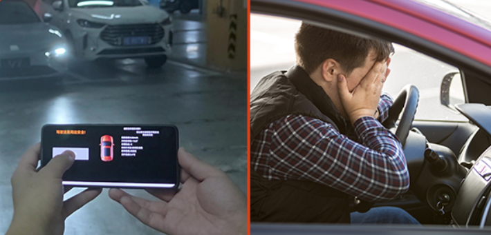
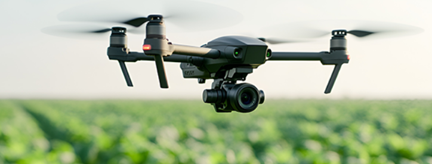

春华启幕，征程再启
寅家科技以智能科技，驱动新一年的效率革新
我们跨越“地面+低空+作业”三大战略版图
为每一位开工的打工人加持科技BUFF!
无论是让泊车不再“压力山大”
还是为长途运输拉满“安心值”
亦或是为园区&春耕作业开启“上帝视角”
寅家科技智慧方案旨在成为打工人工作生活中的"神助攻"
优雅入场，告别节后停车焦虑
节后通勤压力大，
狭窄车位成复工路上 “拦路虎”?

VT-APA寅家科技泊车辅助系统
"聪明"多传感深度融合感知
智能识别“奇葩”车位停得进更停得稳
深度学习算法，越用越
(窄车位、狭小泊车空间、断头路)
实时监测长途安心，守护舱内安全
节后返程与货运高峰交织，长途高压驾驶，精力如何“超长待机”?
VT-DMS驾驶员监控系统
毫秒级识别头部、眼部视线追踪与姿态检测
有效疲劳分级，精准预警异常驾驶状态和行为
红外感知技术，抗干扰能力强
实现全天候、多光照环境下的特征点实时捕捉
护航干线物流的每一份托付
跨场景数智感知
让便利触手可及
未来的智慧园区，不再只有冷冰冰的机械
VT-Camera工业级智能感知方案
可搭载最新的具身智能技术
在忙碌的复工潮里
将机器视觉与AI摄像头高阶算法能力深度结合
赋予机器人像人一样“读懂”环境的“直觉"
让每一次作业都轻松自如

在春播关键时节
VT-Camera协同农业无人机
化身为守护大地的“数智哨兵”集成高精度定位技术与空间感知算法
无论地形多复杂，它都能凭借灵敏的感知和定位
实现精准作业
将传统的"看天吃饭”
重塑为数据驱动的“数字耕耘”
2026，我们与您并肩，"寅”新出发
将持续深化智能辅助驾驶技术栈的协同创新
打通地面、低空与作业场景的应用边界
为全球合作伙伴提供具备竞争力的系统级解决方案
愿每一位奋斗者
都能在智慧科技的陪伴下
眼里有光，脚下有路，共创不凡